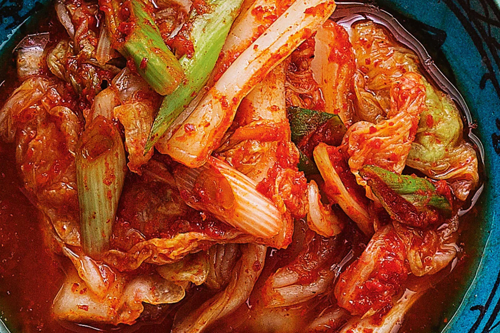

Fermenteren / 005
Kimchi
Klassieke Koreaanse gefermenteerde kool met gochugaru, gember en knoflook. Pittig, fris en diep van smaak — beter naarmate hij langer staat.

Ingrediënten
- Kool
- 2 Chinese kolen (Napa kool)
- Zout: 2–3% van het gewicht van de kolen (bijv. 50 g voor 2,5 kg kool)
- Rijstpap
- 50 g rijstbloem
- 250–300 ml water
- 50 g suiker
- Kimchipasta
- 50 g gochugaru (Koreaanse chilivlokken)
- 50 g knoflook, fijngehakt of geraspt
- 50 g verse gember, geraspt
- 60 g vissaus
- 350 g daikon of radijsjes, in dunne reepjes
- 500 g winterwortel, in julienne
- 4 bosuitjes, in ringetjes
- 1 Nashi peer, geraspt of in kleine stukjes
Bereiding
01Kool zouten (dag 1): Snijd de kolen in kwarten in de lengte. Weeg en bereken 2–3% van het gewicht voor het zout. Bestrooi tussen de bladeren met zout en leg in een grote kom. Laat een nacht rusten op kamertemperatuur (of in de koelkast).
02Kool spoelen (dag 2): Spoel de kool grondig af en knijp voorzichtig het overtollige vocht eruit. Snijd in hapklare stukken.
03Rijstpap: Meng rijstbloem met water in een pannetje en breng al roerend aan de kook. Voeg de suiker toe en blijf roeren tot de pap licht indikt. Laat afkoelen tot kamertemperatuur.
04Kimchipasta: Meng in een grote kom de afgekoelde rijstpap met de gochugaru, knoflook, gember, vissaus en geraspte peer. Voeg daikon, wortel en bosui toe en meng goed.
05Mengen: Trek handschoenen aan. Voeg de koolstukken toe aan de kimchipasta en meng grondig zodat alle kool goed bedekt is.
06Fermenteren: Doe het mengsel in een grote glazen weckpot (of meerdere kleinere) en druk goed aan zodat er zo min mogelijk lucht tussen zit. Laat 5–7 dagen fermenteren op kamertemperatuur. Proef regelmatig — als de smaak goed is, zet je de kimchi in de koelkast om de fermentatie te vertragen.